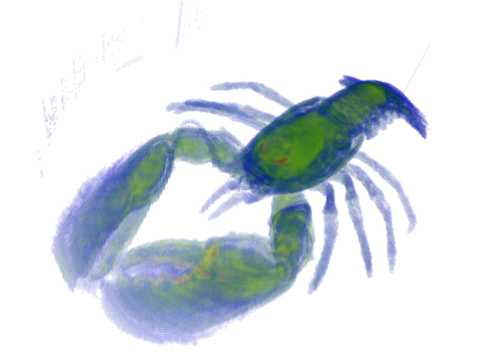
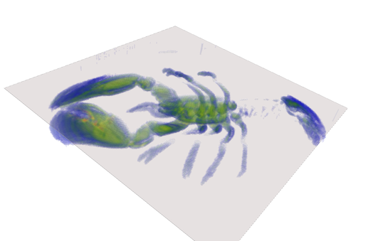

- Author
- Bertrand Kerautret
This part of the manual describes a simple tool written in less than 50 lines which allows to perform a simple 3D volume viewer.
The viewer is based on Viewer3D and the input file is simply a ".vol" and all voxels contained in an interval can be displayed in 3D. The source program 3dVolViewer.cpp can be found in the DGtalTools project. We give here a rapid description of the main parts of the simple viewer.
First we set the program option using boost
namespace po = boost::program_options;
general_opt.add_options()
("help,h", "display this message")
("input-file,i", po::value<std::string>(), "volume file" " (default: standard input)")
("thresholdMin,m", po::value<int>()->default_value(0), "threshold min to define binary shape" )
("thresholdMax,M", po::value<int>()->default_value(255), "threshold max to define binary shape" )
("transparency,t", po::value<uint>()->default_value(255), "transparency") ;
Then argument are parsed and stored:
po::variables_map vm;
po::store(po::parse_command_line(argc, argv, general_opt), vm);
po::notify(vm);
string inputFilename = vm["input-file"].as<std::string>();
int thresholdMin = vm["thresholdMin"].as<int>();
int thresholdMax = vm["thresholdMax"].as<int>();
unsigned char transp = vm["transparency"].as<uint>();
The image can be loaded simply as follows:
ImageContainerBySTLVector< Domain, Value > Type
static ImageContainer importVol(const std::string &filename, const Functor &aFunctor=Functor())
ImageContainerBySTLVector< Domain, Value > Image
and its associated domain is obtain with:
HyperRectDomain< Space > Domain
We use the GradientColorMap to obtain a pretty rendering a grey level volume information.
GradientColorMap<long> gradient( thresholdMin, thresholdMax);
gradient.addColor(LibBoard::Color::Blue);
gradient.addColor(LibBoard::Color::Green);
gradient.addColor(LibBoard::Color::Yellow);
gradient.addColor(LibBoard::Color::Red);
Finally we only have to display the voxels with Viewer3D:
unsigned char val= image( (*it) );
LibBoard::Color c= gradient(val);
if(val<=thresholdMax && val >=thresholdMin){
viewer << CustomColors3D(QColor((float)(c.red()), (float)(c.green()),(float)(c.blue()), transp),
QColor((float)(c.red()), (float)(c.green()),(float)(c.blue()), transp));
viewer << *it;
}
}
viewer << Viewer3D<>::updateDisplay;
By executing the following command line from the build directory of DGtalTools:
./visualisation/3dVolViewer -i ../examples/samples/lobster.vol -m 30 -M 255 -t 10
You will get the following visualisation:

Example of visualisation obtained with 3dVolViewer
You can also add a clipping plane:
viewer << ClippingPlane(0,0,-1, 20);
You will get the following visualisation:

Example of visualisation obtained with 3dVolViewer
 1.12.0
1.12.0